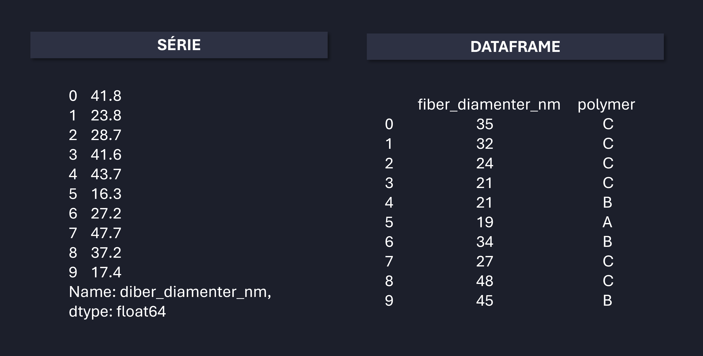

import pandas as pdManipulação de Dados com Pandas
Leitura de arquivos
Primeiramente, é importante entendermos as duas estrturuas que o Pandas trabalha: séries e dataframes. Ambas estruturas estão ilustradas na Figura a seguir. Ao longo das aulas, iremos trabalhar majoriatiaramente com dataframes.

O Pandas permite ler diversos formatos de dados, desde planilhas em Excel (.xlsx), arquivos separados por vírgula (.csv), tabelas em páginas html, arquivos de texto (.txt), arquivos .json, entre outras possibilidades. Abaixo temos algumas delas:
# arquivo de MS Excel:
dados = pd.read_xlsx('ARQUIVO.xlsx', sheet_name='planilha')
# arquivo csv (separado por vírgulas):
dados = pd.read_csv('ARQUIVO.csv', delimiter=';')
# arquivo de texto:
dados = pd.read_txt('ARQUIVO.txt')
# outros formatos (asc, txt, dat):
dados = pd.read_fwf('ARQUIVO.asc')
# tabela de página web (html):
dados = pd.read_html('URL')[indice_tabela]
# arquivo json:
dados = pd.read_json('ARQUIVO.json')Prévio a coleta de dados, é sempre fundamental importar a biblioteca. Isso é realizado com o comando abaixo:
Feito isso, vejamos alguns exemplos a seguir.
1. Planilha de Excel
preco_streamings = pd.read_excel('dados/preco_servicos_streaming/Streaming_prices.xlsx')
preco_streamings| Streaming service | Reference date | Price (USD) | |
|---|---|---|---|
| 0 | Netflix | Jul-2011 | 7.99 |
| 1 | Netflix | Aug-2011 | 7.99 |
| 2 | Netflix | Sep-2011 | 7.99 |
| 3 | Netflix | Oct-2011 | 7.99 |
| 4 | Netflix | Nov-2011 | 7.99 |
| ... | ... | ... | ... |
| 499 | Apple TV+ | Sep-2023 | 6.99 |
| 500 | Apple TV+ | Oct-2023 | 6.99 |
| 501 | Apple TV+ | Nov-2023 | 6.99 |
| 502 | Apple TV+ | Dec-2023 | 6.99 |
| 503 | Apple TV+ | Jan-2024 | 9.99 |
504 rows × 3 columns
2. Arquivo csv
vendas_europa = pd.read_csv('dados/vendas/EuropeSalesRecords.csv')
vendas_europa| Region | Country | Item Type | Sales Channel | Order Priority | Order Date | Order ID | Ship Date | Units Sold | Unit Price | Unit Cost | Total Revenue | Total Cost | Total Profit | |
|---|---|---|---|---|---|---|---|---|---|---|---|---|---|---|
| 0 | Europe | Czech Republic | Beverages | Offline | C | 9/12/2011 | 478051030 | 9/29/2011 | 4778 | 47.45 | 31.79 | 226716.10 | 151892.62 | 74823.48 |
| 1 | Europe | Bosnia and Herzegovina | Clothes | Online | M | 10/14/2013 | 919133651 | 11/4/2013 | 927 | 109.28 | 35.84 | 101302.56 | 33223.68 | 68078.88 |
| 2 | Europe | Austria | Cereal | Offline | C | 8/13/2014 | 987410676 | 9/6/2014 | 5616 | 205.70 | 117.11 | 1155211.20 | 657689.76 | 497521.44 |
| 3 | Europe | Bulgaria | Office Supplies | Online | L | 10/31/2010 | 672330081 | 11/29/2010 | 6266 | 651.21 | 524.96 | 4080481.86 | 3289399.36 | 791082.50 |
| 4 | Europe | Estonia | Fruits | Online | L | 9/28/2016 | 579463422 | 11/1/2016 | 4958 | 9.33 | 6.92 | 46258.14 | 34309.36 | 11948.78 |
| ... | ... | ... | ... | ... | ... | ... | ... | ... | ... | ... | ... | ... | ... | ... |
| 1325 | Europe | Norway | Personal Care | Offline | M | 1/14/2014 | 634033286 | 1/15/2014 | 3394 | 81.73 | 56.67 | 277391.62 | 192337.98 | 85053.64 |
| 1326 | Europe | Ukraine | Cereal | Offline | L | 4/14/2014 | 559183347 | 5/21/2014 | 3633 | 205.70 | 117.11 | 747308.10 | 425460.63 | 321847.47 |
| 1327 | Europe | Armenia | Meat | Offline | M | 11/9/2015 | 781416594 | 12/23/2015 | 7390 | 421.89 | 364.69 | 3117767.10 | 2695059.10 | 422708.00 |
| 1328 | Europe | Denmark | Clothes | Offline | H | 5/9/2012 | 713357150 | 6/3/2012 | 7088 | 109.28 | 35.84 | 774576.64 | 254033.92 | 520542.72 |
| 1329 | Europe | Finland | Clothes | Online | L | 4/22/2014 | 906794202 | 5/11/2014 | 9410 | 109.28 | 35.84 | 1028324.80 | 337254.40 | 691070.40 |
1330 rows × 14 columns
3. Arquivo txt
enderecos_IP = pd.read_fwf('dados/enderecos_ip/ip_addresses.txt', delimiter='; ')
enderecos_IP| id | ip_address | |
|---|---|---|
| 0 | 1 | 9.94.168.149 |
| 1 | 2 | 79.89.169.206 |
| 2 | 3 | 115.137.202.175 |
| 3 | 4 | 226.167.14.232 |
| 4 | 5 | 23.103.124.99 |
| 5 | 6 | 140.112.160.33 |
| 6 | 7 | 132.123.247.55 |
| 7 | 8 | 183.24.63.45 |
| 8 | 9 | 218.148.171.144 |
| 9 | 10 | 217.152.48.198 |
4. Tabela html
# OBS --- é preciso ter tabelas HTML para ler
URL = 'https://pt.wikipedia.org/wiki/Demografia_do_Brasil'
crescimento_populacional = pd.read_html(URL)[3]
crescimento_populacional| País | Crianças (de 0 a 14 anos) | Jovens (de 15 a 24 anos) | Adultos (de 25 a 64 anos) | Idosos (a partir de 65 anos) | |
|---|---|---|---|---|---|
| 0 | Brasil | 20,0% | 15,7% | 54,1% | 10,2% |
| 1 | Reino Unido | 17,1% | 11,8% | 52,3% | 18,8% |
| 2 | México | 24,3% | 17,0% | 50,8% | 7,9% |
| 3 | Nigéria | 41,0% | 20,6% | 35,3% | 3,1% |
Dica:
verificar quantas tabelas tem a página:
crescimento_populacional = pd.read_html(URL)
len(crescimento_populacional)185. Arquivo json
corridas_app = pd.read_json('dados/corridas/corridas.json')
corridas_app| id | origem | destino | data_hora_inicio | data_hora_fim | valor | motorista | passageiro | |
|---|---|---|---|---|---|---|---|---|
| 0 | 1 | {'latitude': -23.5505, 'longitude': -46.6333, ... | {'latitude': -23.5667, 'longitude': -46.6667, ... | 2024-02-15T10:00:00 | 2024-02-15T10:30:00 | 25.50 | {'id': '789012345', 'nome': 'João da Silva', '... | {'id': '987654321', 'nome': 'Maria Oliveira', ... |
| 1 | 2 | {'latitude': -23.5603, 'longitude': -46.6619, ... | {'latitude': -23.5675, 'longitude': -46.6515, ... | 2024-02-16T14:00:00 | 2024-02-16T14:30:00 | 30.75 | {'id': '789012346', 'nome': 'Ana Souza', 'carr... | {'id': '987654322', 'nome': 'Carlos Santos', '... |
| 2 | 3 | {'latitude': -23.5628, 'longitude': -46.6541, ... | {'latitude': -23.5689, 'longitude': -46.6752, ... | 2024-02-17T08:30:00 | 2024-02-17T09:00:00 | 20.00 | {'id': '789012347', 'nome': 'Pedro Santos', 'c... | {'id': '987654323', 'nome': 'Juliana Oliveira'... |
Dica:
Mais informações e opções podem ser encontradas na documentação oficial do Pandas (veja esse exemplo para o método pd.read_csv)